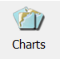
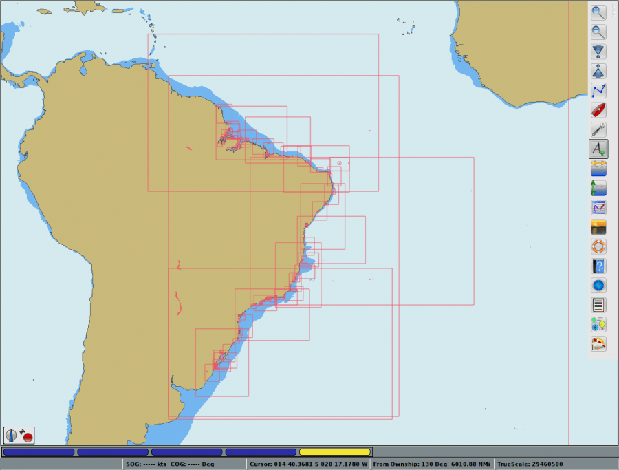
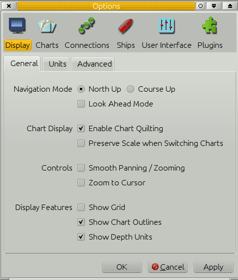
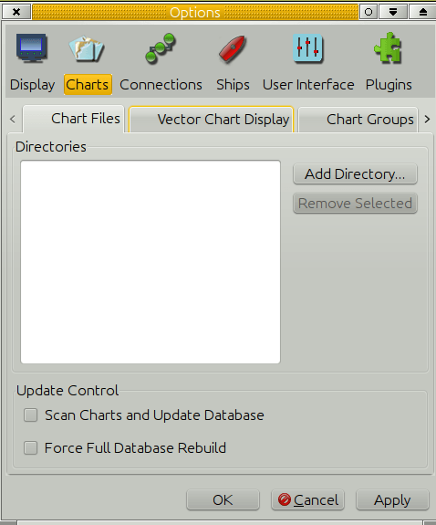
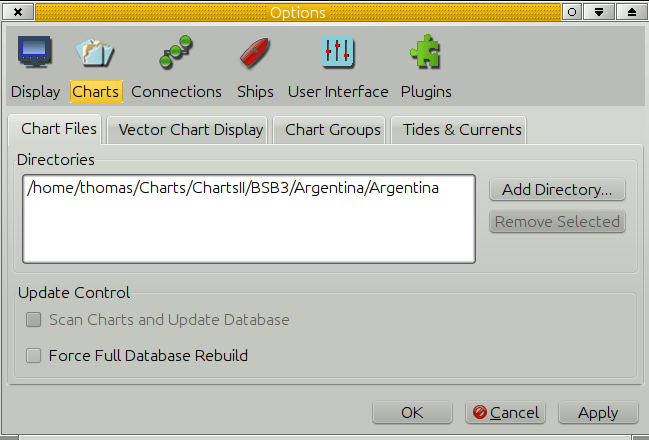
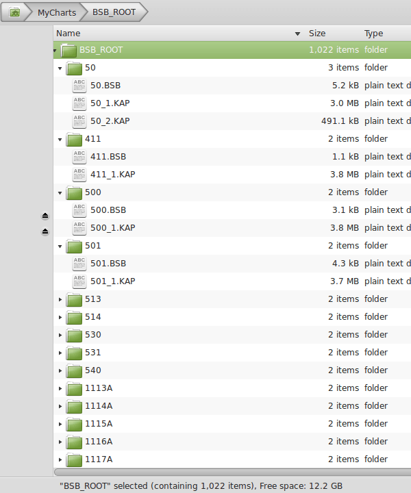
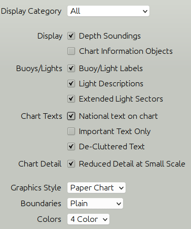
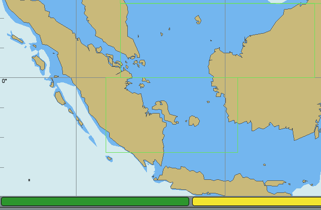

Chart Files Tab

| The potential danger to the mariner increases with digital charts because by zooming in, he can increase the chart scale beyond what can be supported by the source data. The digital charts because by zooming in, he can increase the chart scale beyond what can be supported by the source data. The constant and automatic update of the vessel’s position on the chart display can give the navigator a false sense of security, causing him to rely on the accuracy of a chart when the source data from which the chart was compiled cannot support the scale of the chart displayed. Bowditch 2002 Ed p 412. |
Installing Charts
For the first time user, the easiest path is to use Chart Downloader Tab First, even if your primary charts are found somewhere else. It's possible, even desirable, to find charts in many places that the Chart Downloader doesn't cover (e.g. CM93 Vers 2). But when getting started, take the easier path. You will learn how things work and will make better choices when adding charts from other sources.

Free Brazilian charts OpenCPN doesnot come with any pre-installed charts. It is up to the user to find and install charts. Read on, and you will find detailed information about which chart formats that OpenCPN can display, as well as pointers to all available charts for OpenCPN, free downloads as well as commercial, that we know of.
Background Chart
OpenCPN comes with a worldwide background map, in GSHHS format, displayed if no charts are available for an area.
To install charts, OpenCPN must be pointed to a directory containing Charts of one of the recognized
Chart Formats Don't point OpenCPN to individual charts. You must specify the directory that contains the charts.
Where do I keep my charts ?
The installation tells you to go to the Options→Charts→Chart Files tab to install charts.
When you press the “Add Directory” button the default directory will be “My Documents” for Windows, and the users home directory, for Linux and Mac. These are good places to keep your charts. Create a “Chart” directory, and maybe some sub directories, to keep your charts in, and you can't go far wrong.
We suggest you can create a “Chart” directory, and possibly two or three sub directories, “RNC” and “ENC” and possibly “CM93” to keep your charts in, and you can't go far wrong. Seasoned users knows where they want their charts.
Regard charts as data, independent of OpenCPN. Store them in a place that is convenient for you and that is left alone by the operating system.
Download some charts (see Chart Sources) to your newly created Chart directory. Follow the directions below to make this directory an “Active Chart Directory”
The main consideration for charts is storing them in a directory where they will not be tampered with or moved accidentally.
Installing Charts
Open the Options Dialog by clicking 
You are sent to the first tab “Display”. Tick the box “Show Chart Outlines”. That will help you visualize the loaded charts.

Then click the tab “Charts” and then the tab “Chart Files”.

There are no charts loaded. To add charts we have to add a directory that contains charts of a recognized format. To get started press “Add Directories” and navigate to your chart-directory.
Exactly how the dialog looks like depends on your operating system, and is not a part of the core OpenCPN.
When clicking the button “Open” above, the highlighted chart directory is added to the box “Directories”. The screen-shots are from Linux, but this process works similarly on all platforms. Add more chart directories using the same process again. It's OK to load both raster- and vector-charts together.

All that remains is to click the “Apply” button. OpenCPN will then process your selection. You can now start using your charts. When you are done with your settings click “OK” and the Options Dialog closes. If you are just adding a chart directory, it works fine to just click the “Ok” button.
The charts often come in a compressed package eg. a ZIP archive. You must first uncompress them to your disk to be able to set them up. The following screenshot shows the file and directory structure of the NOAA raster charts (RNC) on a local disk

Note that in OpenCPN you must add directories (folders) containing charts, not the individual charts.
For BSB4 and nv-charts, first install the latest plugin version, then point OpenCPN to the correct chart directories and finally do a “Full Database Rebuild”.
Eager to get some charts quickly, to get started? Go to: Use the integrated Chart Downloader Tab or go to Chart Sources to learn where you can get charts.
Check your charts after installation
This step is important if you just installed some old BSB charts, say from the ninties, or charts of dubious origin. For example, there are a lot of old Maptech charts that uses the Geodetic Datum “Unknown”.
It is not a problem with recent charts.
OpenCPN Version 4.0 will reject charts without a projection and add a note in the log about the problem.
Charts with an unrecognized Geodetic Chart Datum will be loaded as if they were WGS84. This may lead to unacceptable errors. The Chart Information Dialog will contain the sentence:“Warning: Chart Datum may be incorrect.” , and the log will contain a note with the words “Chart datum {XXXX} invalid on chart”.
For practical use, it's very important that the implication of this is understood.
Read up on the subject in the Chart Info page
Start using your charts
You can click and drag the chart with your mouse. The cursor changes to an triangular green arrow near the edges of the OpenCPN window, left clicking in this situation, pans the chart in the direction of the arrow. The scroll wheel zooms in and out. Left clicking anywhere centers the view on that position. Right clicking brings up a menu with useful actions. Exactly what the menu contains depends on the circumstances. Read the rest of the manual for a full explanation.
If you are running OpenCPN for the first time you may see the background chart instead of the charts you installed. That simply means OpenCPN is pointed at a location that is not on any of the charts you installed. Click and drag, or use the arrow keys, to move the view-point to the location of one of your installed charts as described under “A few hints” below. Look for the rectangular outlines of the installed charts. An alternative is to right-click, and then click “Jump to position”. Enter a location that is within the perimeters of your entered charts. The first time you start OpenCPN the view will be centered on Georgetown in South Carolina.
Quilting Chart Mode is the default display mode. In this mode all available charts at the viewpoint will be quilted together seamlessly according to certain roles. Read more in Chart Quilting.
The other display mode is Single chart Mode were only one chart at a time is used. It is possible to read all the information printed in the perimeter of a raster chart. To change to another chart, select and click in the Chart Selection Bar. Read more in Chart Status Bar.
Starting with vector charts?
If you are new to vector charts, including CM93 v2, on OpenCPN follow this quick-start guide:
Go to Options {:opencpn:opencpn_user_manual:settings.png?nolink&32×32}} Charts> Vector Chart Display and copy the settings below for the Display Category.

Press this button  in the ToolBar to toggle text display. Alternatively, the “T” hotkey does the same thing.
in the ToolBar to toggle text display. Alternatively, the “T” hotkey does the same thing.
These are not the “perfect” settings, but you will see most of what you expect from a vector chart.
As soon as you have made yourself reasonably comfortable with OpenCPN and before using Vector Charts for actual navigation, make sure you understand all the settings in the Options> Charts> Vector Display Tab by reading the Vector Display Tab page.
Loading Vector Charts
When using a vector chart for the first time, OpenCPN has to process the data, and transform the information to an internal display format. Click the green chart rectangle in the chart-bar to start the process.

This can take some time, depending on your computer. This internal SENC chart, is saved for future use. The created files are quite large, but is in a format optimized for quick loading. OpenCPN is trading, creation time and size, for fast rendering when actually using the vector chart. The SENC files are saved in the SENC directory, in the same place as the opencpn.conf file - opencpn.ini on windows.
To avoid getting a very long series of SENC charts being built at the same time, use single chart mode, for better control. This is certainly called for in areas that are densely populated with vector charts. Single chart mode and quilting are explained on this page Chart Quilting.
You probably do not want to build SENCs for all of your loaded S57 ENCs unless you plan to actually go there….
For an advanced approach to building all SENC files in one go .. Command Line
Updating Vector Charts
Publishers of Vector Charts, such as NOAA and EAHC issues regular updates. OpenCPN updates the created SENCs automatically. The chart itself, the base-chart, is named “name”.000 , the first update is “name”.001 and so on. As a user you only have to make sure that the update files are saved in the same place as the base-chart. In the case of a new edition of the chart a new “name”.000 file is issued. Just replace the old file with the new file and OpenCPN will update the SENC file. Don't forget to remove the updates to the old edition of the chart.
In case of missing revisions in a series of updates errors may be introduced. OpenCPN will pop up a warning dialog with this content:
| “ S57 Cell Update chain incomplete ENC features may be incomplete or inaccurate. Check the logfile for details.” |
CM93 Charts
CM93-version2 Charts are different from the S57 vector charts, and has it's own data structure consisting of a number of folders and files. To load these charts in OpenCPN just add the top directory to the list of “Active Chart Directories”.
In the top CM93 directory is an empty file with the “.EXD”, for example 20110803.EXD. The format is YYYYMMDD.EXD. This is the version, or edition, of the CM93 -v2 release.
OpenCPN supports partial CM93 datasets, covering one or a few of the available regions. There is also support for multiple, as well as multiple partial, CM93 datasets.
The CM93 top directory contains a number of (144) subdirectories named from
“00300000” to “04501020”, as well as six other files. These sub directories each cover a geographical area of 40° x 40° . The first four numbers describes the latitude and the last four, the longitude of the SW corner of the area covered.
This is a typical content of the CM93 V2 top directory.
The key to understanding the numbers is to realize that CM93's coordinate system of the world starts at the South Pole or to be exact at lat -90° long 0° and from there proceeds North a East with a factor of 3 for each degree of lat and long.
The tile 00300000 hence has the SW corner at lat from -90° + 0030:3 = -80° or 80°S to and longitude 0°E , and covers the area from 80°S latitude to 40°S and from 0° longitude to 40°E.
Looking at 04501020 it brakes down to lat -90° + 0450:3 = 60° and long 1020:3 = 340° subtracting 360° results in -20° or 20°W. So we have he SW corner at 60°N and 20°W .
One more example, the tle 03900840 has the SW corner at 40°N and 80°W.
Each of these sub-directories in turn contains directories with the individual charts. Ordered in scale from smallest to largest they are Z,A,B,C,D,E,F and G. Where Z contains overview charts and G contains harbor plans. Note that, generally, not all of these are present in each subdirectory.
- Z covers 40° x 40° deg area and OpenCPN typically uses 1:3.000.000 scale
- A covers 20° x 20° deg area and OpenCPN typically uses 1:1.000.000 scale
- B covers 10° x 10° deg area and OpenCPN typically uses 1:200.000 scale
- down to..
- G covers 20' x 20' and OpenCPN typically uses 1:3500 scale.
The individual chart tiles in these directories have the same logic in the naming scheme as described above.
A few hints. If you ticked the “Show Chart Outlines” box under the “Display” tab the loaded charts will be outlined in red for raster and green for vector charts. In CM93 the charts will be outlined in purple, but only in Single Chart Mode. The smallest scale charts in CM93, the Z scale and A scale charts, will not be outlined. Neither will all available charts be visible as outlines at the same time. The reason for this is computing speed and clarity. Generally the next level or two of larger scale charts are shown. When large scale plans are available directly from A scale charts, with no intermediate charts, the outline of the larger scale charts will be visible from a zoom level between 1.5 and 2.0, but only, as already mentioned, in single chart mode and with chart outlines switched on. Generally in areas where only A or Z scale charts are available, expect potentially dangerous omissions.
Warning, do not use CM93 small scale charts alone for navigation without referring to other sources.
- Be aware that it is possible to “Over-zoom” charts in OpenCPN. A warning will appear on the display. Please respect that warning. It is recommended to not zoom more than a factor 2, for safe navigation. The actual zoom-factor appears in the lower right-hand corner of the display.
- It is safe and reasonably efficient, to put all your charts except the CM93 database in one large directory, and set that directory in Options→Charts→Chart Files. The CM93 database contains its own file and directory structure. The top-level directory only, of this database, should be loaded, as described above.
If you do a lot of chart downloads, updates, etc., then it will be faster to break the charts folder into smaller groups, and specify them individually in the Options > Charts > Chart Files dialog. Consider using Chart Groups Tab
- “Scan Charts and Update Database ” Use this option if you have made any changes to the contents of your chart directories, as for example after downloading new charts from NOAA, etc. It need not be checked if directories are added or subtracted, as the entire database will be scanned and updated automatically in this case.
- “Force Full Database Rebuild” is mainly aimed at users converting or correcting existing charts, in a situation where changes are made to the geo-referencing, outline of the chart, or other attributes in the kap file header section.
- OpenCPN, supports Mercator Charts, Transverse Mercator Charts, Universal Transverse Mercator (UTM) Charts and Polyconical Charts (used in parts of US and Canada). Charts using other projections will not be displayed. A note about the reason for the display refusal, will be found in the “opencpn.log”.
“Other” projections could be Lamberts Conformal Conic Projection, mainly used in high latitude polar areas.Gnomonic charts, mainly used in older, larger scale BA charts, for smaller areas, for example harbor plans, in scales larger than 1:50,000. Newer editions of these charts are generally re-issued as Transverse Mercator charts. Gnomonic projection charts are also traditionally used for Great Circle Sailings. Such charts are not needed in OpenCPN, as Great-circles are handled internally.
- OpenCPN is not suited for Polar Navigation N/S of about 70 degrees. As long as there are Mercator charts available, OpenCPN is OK though. There are some charts available up to 80 N, for example Norwegian chart for the Northern part of Svalbard. The Mercator projection is not generally suited for polar areas, with quickly converging meridians. Small scale (less than 1:100,000 ) high latitude Transverse Mercator Charts, with clearly converging meridians, cannot be displayed correctly. Other projections suited for polar areas can't be displayed at all in OpenCPN.
A Linux/Unix Note
These operating systems have a problem handling chart names containing spaces and non ASCII characters. A typical example is Swedish chart names.
To sort this out use the utility program "detox“. Detox changes the file names so space becomes “_”; ”(“ and ”)“ become ”-“; and “å”,”ä“ and “ö” become “a”,”a“ and “o”, etc.
To see what “detox” suggests to do, try a dry run first, like this:
detox -n File_with_swedish_charts > outfile \\